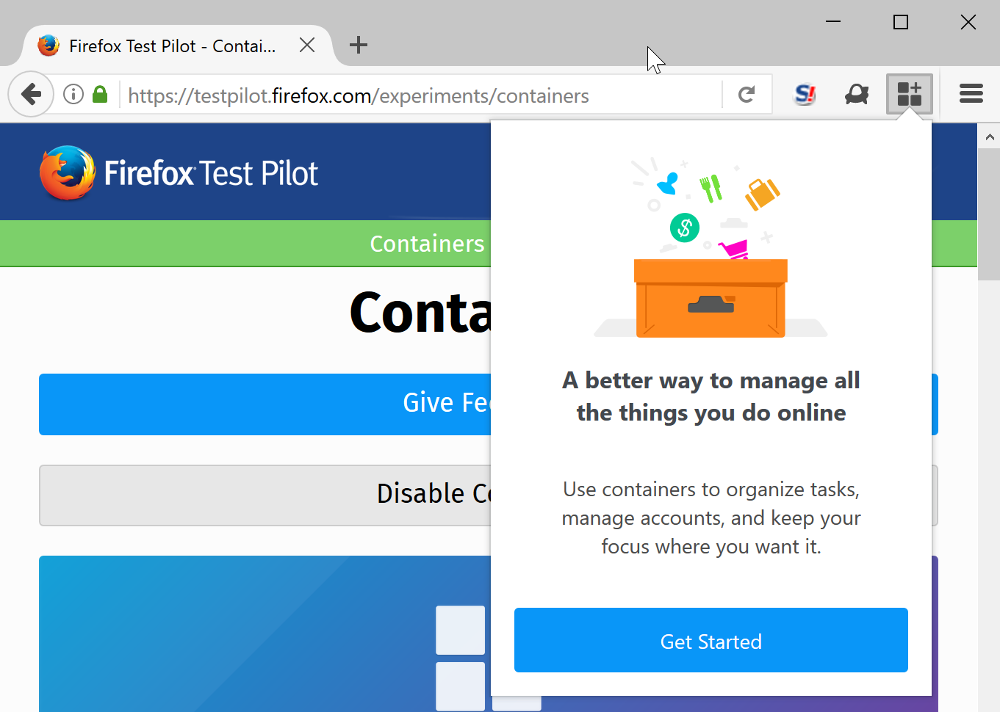
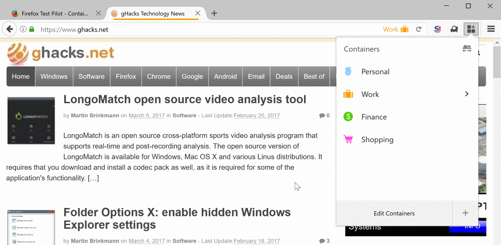
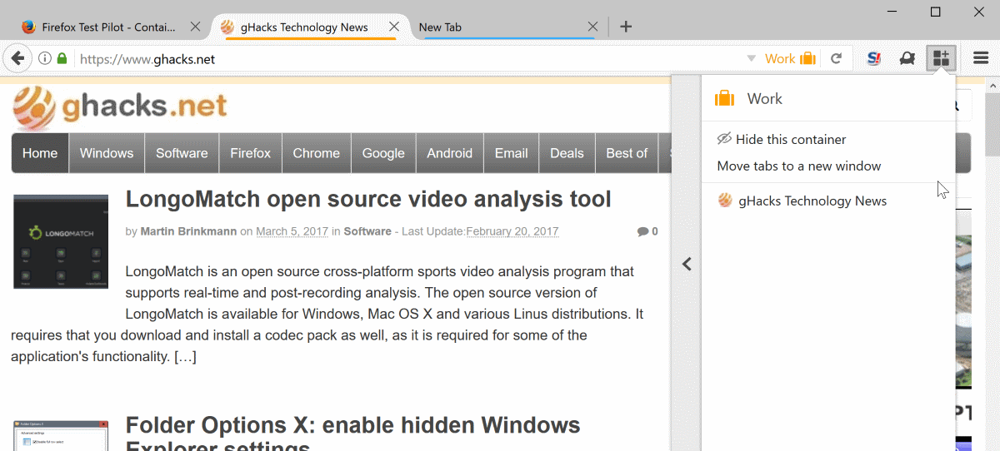

Mozilla launched a new TestPilot project for the Firefox web browser yesterday that brings Containers to all versions of the web browser.
We talked about the web browser's Containers functionality before in our first look of the feature back in mid 2016. Containers look a lot like Firefox profiles on first glance, but they are different in several characteristics.
One of the main differences is that containers run under the same profile. While they do separate certain kinds of data when used, other data is not separated like it is the case if you are using profiles in the Firefox web browser.
Basically, many of the bits of data that get transferred or created when you connect to websites are separated, while features such as extensions, bookmarks, or browser preferences are not.
This makes Containers less powerful than profiles, but still useful for certain use cases. You can use the to sign in to the same web service multiple times, separate browsing activities by using different containers for activities like shopping, social media, research, or entertainment.
The latter can be quite useful to limit tracking or ad retargeting among other things. You can sign in to Gmail for instance, and use Google Search in another container to avoid that the account is linked to the searches.
Firefox Containers TestPilot experiment

The newly launched Containers experiment of the TestPilot project brings the feature to all versions of Firefox. You do need to install the TestPilot extension first, and then the Containers experiment to make use of the feature.
If you move the mouse cursor over the plus icon in the tab bar, you will notice the new container options that you can launch from there in new tabs. Simply move the mouse over the plus, and select one of the available containers that you want to launch.

You find the color of the container under the tab as an indicator that the tab has been opened in a particular container. All containers use icons and colors to help you distinguish between them.
Since containers separate most site data, you will notice that you are not signed in to any account because of that for instance.
The functionality of the experiment is somewhat limited right now. You can edit the four default containers -- personal, work, finance and shopping -- and create your own custom containers as well.
A click on the container icon in the main Firefox toolbar lists all containers. You can click on any to open a tab in the selected container. The menu indicates as well if sites are currently opened in selected containers. A click on the arrow icon next to a container opens a list of all sites of that container.

From there, you may move the tabs to a new window, or hide the container. Hiding hides all tabs of the selected container until you return to the menu later on to reveal the container again in the browser.
The order in which container tabs are displayed in Firefox may be change with a click on the sort button. This moves tabs of any container next to each other in the browser's tab bar.
Closing Words
Mozilla launched the Containers TestPilot experiment to gather data on usage. The data will certainly play a role when it comes to making a decision on the future of the feature. Will it land in Firefox?
I would like to see more functionality added to it prior to that, like the ability to restrict sites to containers, shortcuts to open them quickly, or control over a containers set of saved data.
Now You: What's your take on Containers in Firefox?

Tor tab incoming? I think so.
Nice feature! I can now log into all my Microsoft email accounts in the same browser at the same time. Don't have to use a private window to accomplish some of this.
This is the first improvement to Firefox in a very, very, very long time. Most of the Mozilla coders other changes are reductions of features.
Thanks Martin for letting us know.
Very promising function. Why would you want to abandon your bookmarks and extensions when switching profiles ? Although browser preferences are precisely something that you might want to change according to which type of site you visit.
Profiles are one of the most potentially useful concepts of Firefox. However, when I was learning the browser and was asking questions from the Mozilla community, it seemed obvious that allowing users to switch profiles easily had stopped being a concern long ago. From the answers I got, it looked like profiles were essentially used by developers, in order to emulate different types of users.
The steps to create, name, rename, select, backup or restore profiles are completely user-hostile and counterintuitive. The concept remains half-baked, and it's a pity. Instead of enhancing it, they seem intent on building another concept on the side.
I already know that I won't use Firefox Containers, for the simple fact that I see no need to change profiles on a regular basis and that otherwise restarting the browser with a dedicated profile is not a problem since it seldom occurs.
Users who need to constantly change profiles will certainly find this feature welcomed. But I don't believe it will have a wide audience, maybe because conceptually too elaborated. Mozilla seems to be willing to emphasize on simplicity to the point of reducing notably add-ons' power with announced WebExtensions and, IMO, Firefox Containers appears to be in contradiction with that simplicity policy.
This sounds like it would have meshed fairly well with Tab Groups. In fact, some of the features seem very much like tab groups (such as being able to hide or show all tabs of a specific container at once).
Too bad Mozilla killed local development of tab groups, and now have killed the extension version as well.
Also a bit ironic that they'd be developing something that feels like it has so many resemblances to a technology they abandoned, when the excuse for abandoning it was that it took too much work/developer time (and that nobody used it because they hid it from the user interface), but this new solution-looking-for-a-problem work is perfectly fine.
As for utility to defeat tracking, given that browser fingerprinting has now reached the level of computer identification rather than browser identification (ie: they can now uniquely identify your computer even if you switch between browsers, much less different profiles in the same browser), that aspect of using containers would seem to have a very limited lifetime of usefulness ahead of it. As such, I'm having a real hard time finding a decent use case for this feature, other than being able to log into the same service multiple times from the same browser session (and that itself is pretty niche).
Tab Groups was focused on tabs.
This is focused on identity management; the tab grouping/hiding feature seems like a usability improvement to go with this new identity management.
I wouldn't be surprised if it ends seeing little use, indeed, but I know I'd use it (I just installed Test Pilot just to try this out), whereas I had no use for Tab Groups, so to each its own.
is this the new tab group?
It would be nice that NoScript permissions become per container, so I could allow google or facebook shit and not have to revoke temporary permissions as often since actual browsing would occur in a separate container.
Though if NoScript permissions were per site it would be even better.
You can have per-site script permissions with uMatrix.
Be warned that it's a little complex, so it takes some time getting into.
This looks like a promising technology.
Is it just like having multiple separate private windows?
Can someone please tell me the differences between the add-on listed in this article, test pilot add-on - https://testpilot.firefox.com/experiments/containers and this article here - https://www.ghacks.net/2016/06/15/firefox-container-tab/ which i can enable in about:config with preference privacy.userContext.enabled ?
The only thing i can think of is the add-on just toggles the about:config preference privacy.userContext.enabled to true and collects some data that helps Mozilla. Am i right Martin, anyone? if not, what is the difference.
The experiment has another UI and additional features like a) sort containers b) hide container or c) move container to a new window. And, of course, more telemetry.
Okay, thank you Sören.